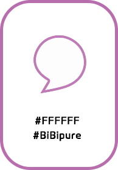
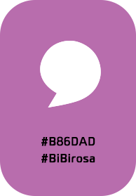
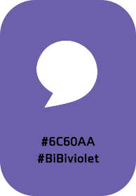
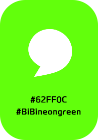
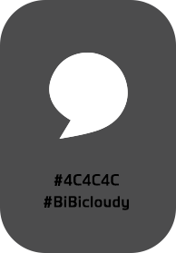
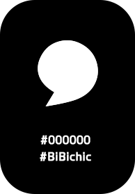

BiBitalk is a video call based language exchange app that you can talk with native speaker.
When you do a language exchange, sometimes you can’t get what partner saying.
You might really embarrassed , When you have kind of this situation,
But, No more worries!
BiBitalk offer a service which the partner’s words are automatically captioned.
You don’t have to look up a dictionary app or stand awkward silence.
All you need to do is learn a new language and make a new friend.
So, Let’s join BiBi world!
B is represented by BiBitalk’s ‘B’ and ‘Beyond own cellphone, make a Best friend’.
A bubble mark was created by adding softness. It is obtaining a motif from a bubble,
It is a sign to communicate and also means people’s conversation.
     

Paybook OTF Font is a premium Gothic font with a variety of weight super families.
Readability is made with the top priority, so it has optimized usability on mobile.
Also it is a typeface that can provide visual stability and increase readability.